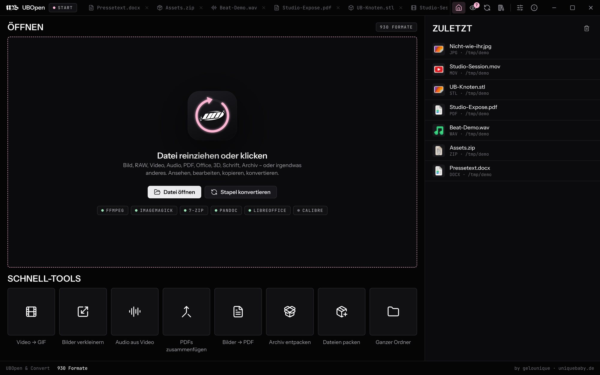
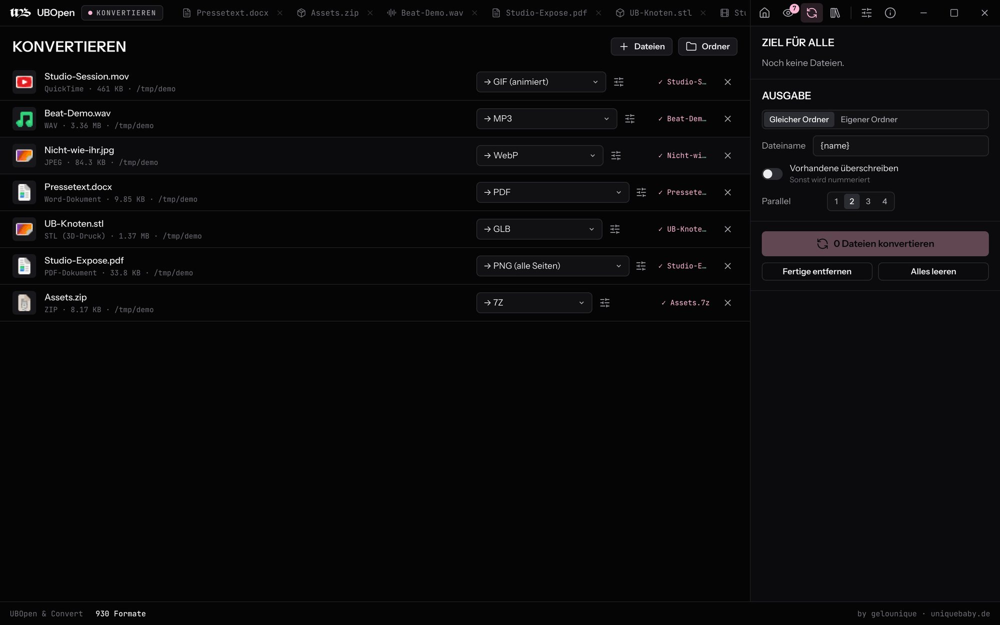
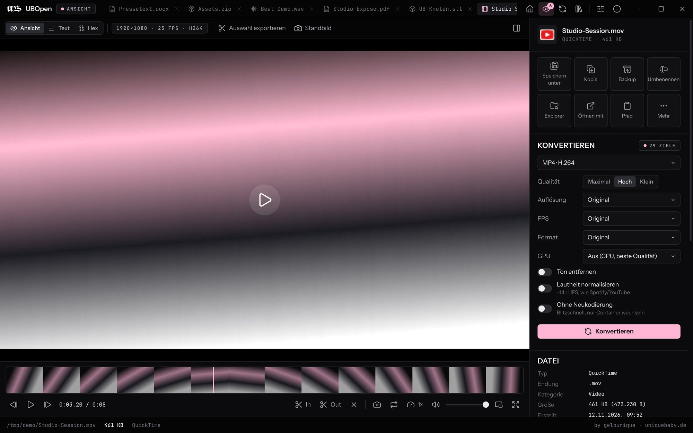

UBOpen
UBOpenJede Datei.
Jedes Format.
Öffnen, ansehen, bearbeiten und konvertieren – über 930 Formate in einer App. Bilder, RAW, Video, Audio, PDF, Office, Archive, 3D und alles dazwischen.

Jetzt in der Beta.
Für kurze Zeit kostenlos.
UBOpen ist der Datei-Öffner, den man eigentlich immer gebraucht hätte: reinziehen, ansehen, umwandeln. Solange die Beta läuft, kannst du alles kostenlos laden – für Windows, Mac (Apple Silicon & Intel) und als Testversion direkt im Browser.
Ein Format zickt? Bug melden – jede Meldung macht UBOpen besser.
Kann UBOpen das öffnen?
Spoiler: sehr wahrscheinlich. Tipp eine Dateiendung ein – oder stöber durch die Kategorien.
Reinziehen. Ansehen. Fertig.
Kein Suchen nach dem passenden Programm, kein Online-Konverter, der deine Dateien hochlädt. UBOpen erkennt jede Datei am Inhalt – nicht nur an der Endung – und arbeitet komplett lokal.
Datei rein
Reinziehen, Öffnen mit › UBOpen oder Doppelklick. Auch ganze Ordner und hunderte Dateien auf einmal.
Ansehen
Der passende Viewer startet sofort: Bild, Video, PDF, Tabelle, 3D-Modell, Archiv, Schrift, Hex …
Konvertieren
Zielformat wählen, Qualität einstellen, los. Original bleibt unangetastet – du bekommst eine Kopie.

Ein Programm statt zwanzig.
26 Kategorien, ein Viewer
Für jede Dateiart der passende Blick – mit Zoom, Infos, Metadaten und Bearbeitung, wo es Sinn ergibt.
Batch-Konvertieren
Ganze Ordner in einem Rutsch: Bilder zu WebP, Videos zu MP4, Audio zu MP3, Tabellen zu XLSX – mit Qualitäts-Stufen.
Kopien statt Risiko
Speichern unter, Duplikat, als ZIP packen, Prüfsummen – dein Original wird nie überschrieben.

Bearbeiten, wo es passt
Bilder drehen, zuschneiden, Größe ändern. Videos trimmen, Audio extrahieren, GIFs bauen. PDFs zu Bildern, Text zu PDF.
100 % lokal
Keine Uploads, kein Konto. FFmpeg, ImageMagick, 7-Zip und Pandoc sind eingebaut.
Auch im Browser
Die Testversion läuft mit WebAssembly direkt im Tab – Dateien verlassen dein Gerät nicht.
Kostenlos laden.
Solange die Beta läuft, für alle. Alle Engines sind schon drin – installieren, Datei reinziehen, fertig. Der Setup trägt UBOpen auf Wunsch bei „Öffnen mit“ ein, ein Uninstaller ist dabei.
Noch unsigniert: Windows zeigt evtl. „Der Computer wurde durch Windows geschützt“ → Weitere Informationen › Trotzdem ausführen. Auf dem Mac die App beim ersten Start per Rechtsklick › Öffnen starten. Welcher Mac? Apfel-Menü › Über diesen Mac: „Chip Apple M…“ = Apple Silicon, „Prozessor Intel“ = Intel.
Eine Datei will nicht?
Schreib uns, was passiert ist – die Meldung geht direkt an support@uniquebaby.de. Mit Dateiendung und Zielformat ist es am schnellsten gefixt.